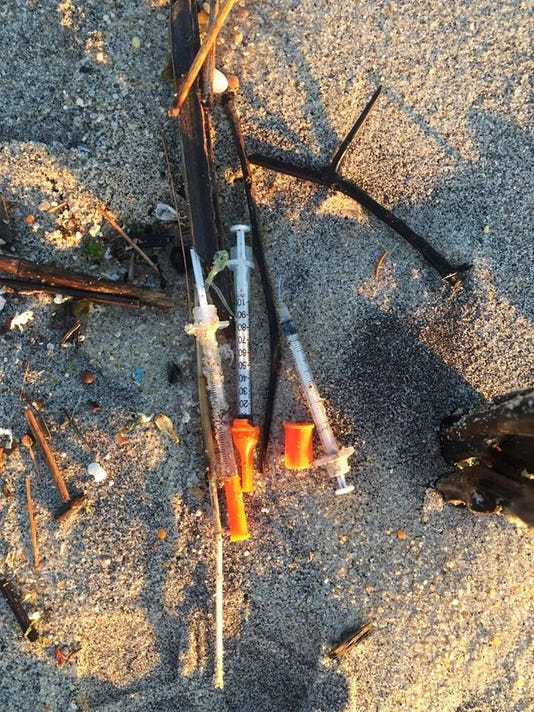
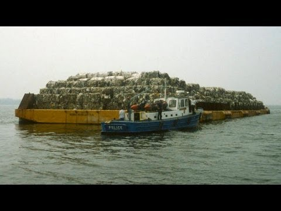
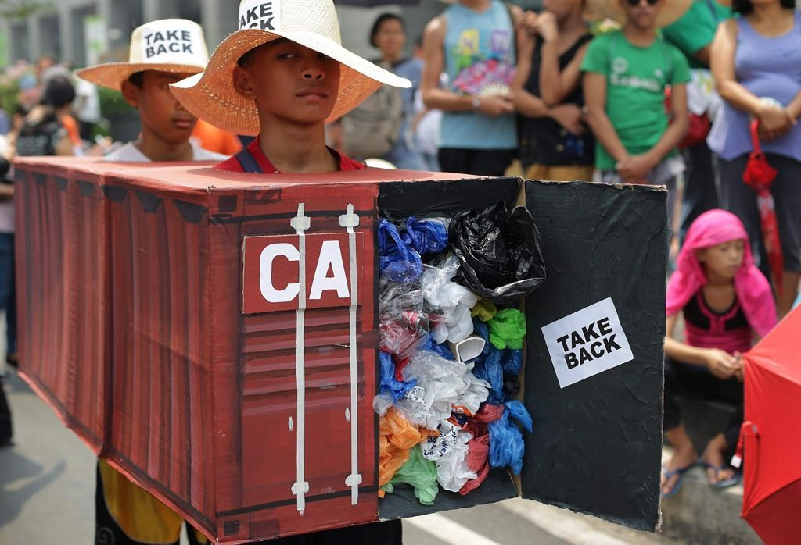
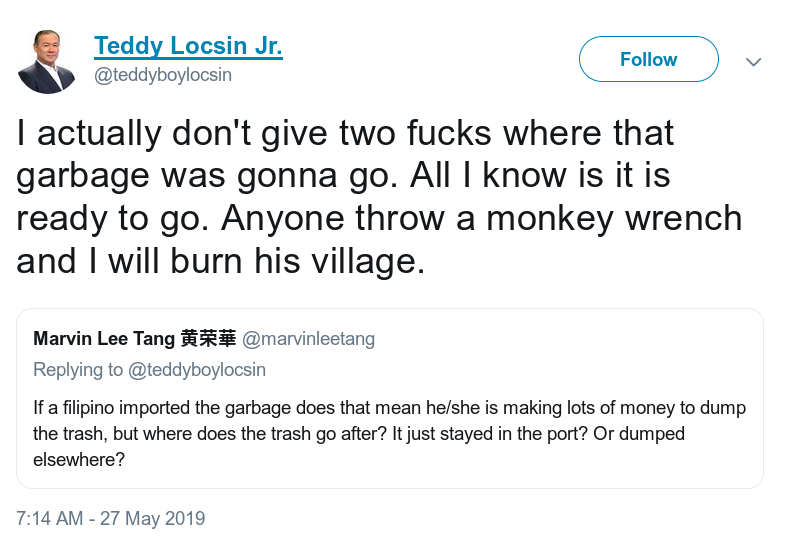
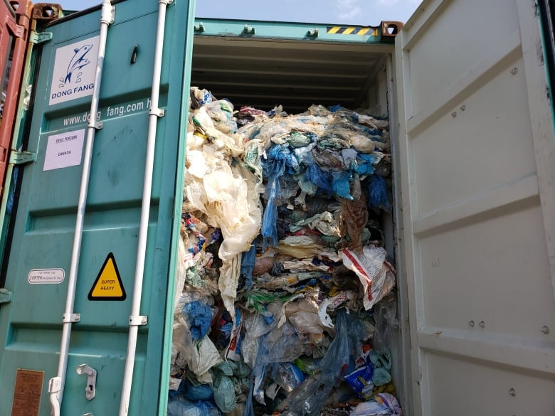
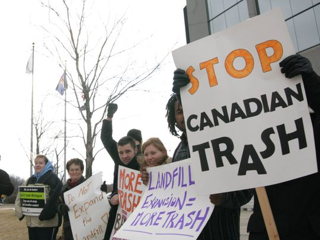

trash
why talk about trash
we make a lot
1.3 billion tonnes per year
Source: World Bankimagine: 52,000 container ships of MSW
MSW: Municipal Solid Waste

that's 52,000 104,000 container ships of MSW
in 10 years
and it literally just like disappears* from our daily lives into the ether
gif: @samdavisart
* when the system is working
(for us in the OECD)when it doesn't work
context:
- by the 80s, most urban landfills were filling up
- incineration tech lacking, unpopular
- recycling: lol not a thing yet, really
syringe tide (87-88)
literally the most new jersey thing ever

the gar-barge (87)

contemporary context
- national sword: china stops importing "recycling" after damning documentary (plastic china)
- material rates in freefall
- basel convention: can't send hazardous waste to less developed countries
phillipines 2016-19
in the words of the filipino foreign secretary
malaysia 2019
malaysian environmental minister:
"i think you need to take back your rubbish"
toronto's garbage
view from the landfill757,046 tonnes in 2018 of MSW
31,543 standard shipping containers
(stacked, that'd be as tall as 138 cn towers)

757,046 364,316 tonnes of garbage
31,543 15,179 standard shipping containers
(stacked, that'd be as tall as 66 cn towers)
other (diverted)
10.58%
- Electronics
- Household Hazardous Waste
- Environment Days/Depots/Reuse Centres
- Large Appliances/Scrap Metal
- Grasscycling
- Deposit Return & Stewardship Program
- Backyard composting
- Tyres
blue bin
11.38%
single stream recycling
it all goes in one bin
contamination
- reaching 27%, and on the upswing
- on the increase because of new materials
- also, "acceptable" contamination is no longer a thing.
The ongoing challenges with contamination in the Blue Bin Recycling Program, along with the new international market conditions, could potentially result in an approximately $9.2 million pressure to the Solid Waste Management Services Division by the end of 2018, should things continue as they are today
where does it go?


~60%: Canada Fibres Ltd.
"either shipped directly to an end market for use in the manufacturing of new products, or they’re sent to our one of our plants for further processing and resale into an end market [...] all over the world–from local markets in Toronto, to markets throughout Canada, the United States, Europe, South East Asia and the Pacific Rim."
City does sell non-paper fibermaterials, such as polycoat/aseptic containers and film plastic, directly to markets
but like also "somehow" all of it ends up in less developed asian countries
it's a complicated industry, filled with recycling brokers, massive public contracts and very little regulation
brown bin
17.75%
where it go
disco + dufferin
- disco: wet pre-processing
- dufferin: press pre-processing
- both produce biogas (soon: natural gas) and compost
black bin
48%
landfill
just thrown in the ground, somewhere outside London, Ontario
past: michigan
we are responsible for 10% of all of the garbage in Michigan
Toronto stopped in 2006, but other municipalities are sending more and more
further past: lol anywhere?
there are 160 former landfill sites in toronto
Keele valley was the last one (closed 2002)
what to do now?
1. demand better from policy makers
- producer responsibility
- single use plastic bans
- bans on difficult to recycle products
- container deposits
- so much low hanging fruit here...
2. consume less
3. recycle better
- just like, think before you throw something away.
- also the TO waste app
bonus: how does plastic end up in the ocean??
literally just literring, both industrial and end user